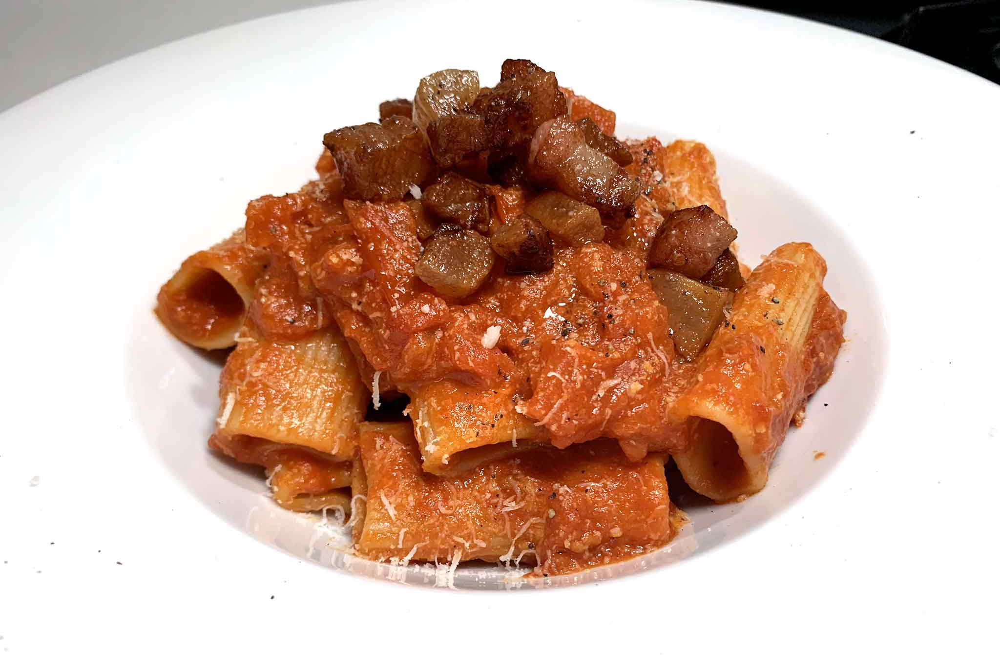

Description
Amatriciana is a traditional Italian pasta sauce based on guanciale (cured pork cheek), pecorino cheese, and
tomato. Originating from the town of Amatrice, the Amatriciana sauce is one of the best-known pasta sauces
in Roman and Italian cuisine. The sauce is typically served with bucatini or spaghetti pasta.
Ingredients
- Bucatini
- Guanciale
- Tomato sauce
- Pecorino cheese
- Black pepper
- Red pepper flakes
- Onion
- Garlic
- Olive oil
Steps
- Bring a large pot of salted water to a boil. Add bucatini and cook until al dente.
- Meanwhile, in a large skillet, cook guanciale over medium heat until crispy.
- Add onion and garlic to the skillet and cook until soft.
- Add tomato sauce, black pepper, and red pepper flakes. Simmer for 10 minutes.
- Drain bucatini and add to the skillet. Toss to combine.
- Remove skillet from heat and add pecorino cheese, stirring quickly to coat the pasta.
- Season with additional black pepper and red pepper flakes to taste.